Product & Accessory Designs
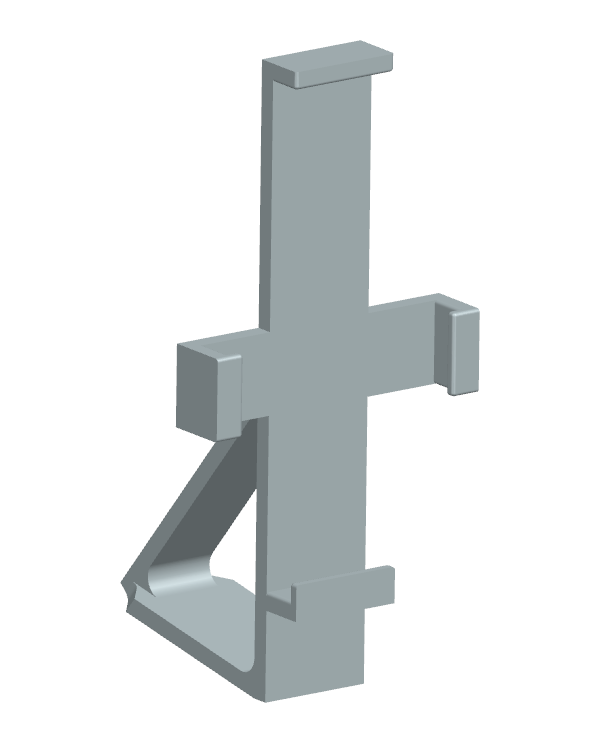
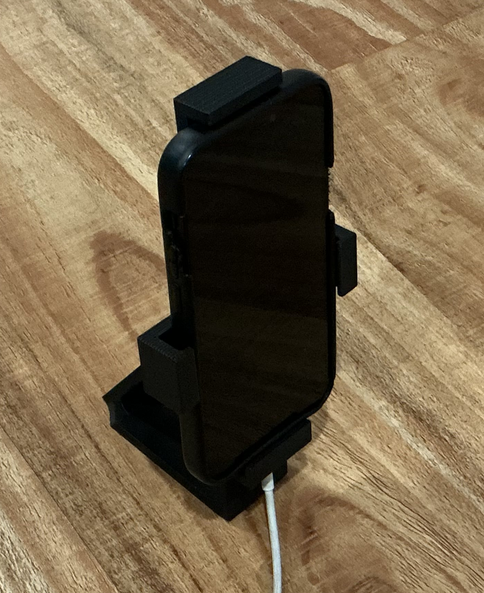
Compact Phone Stand
Small iPhone 12 mini stand with fixed support and charger cable cutout. Designed in NX.
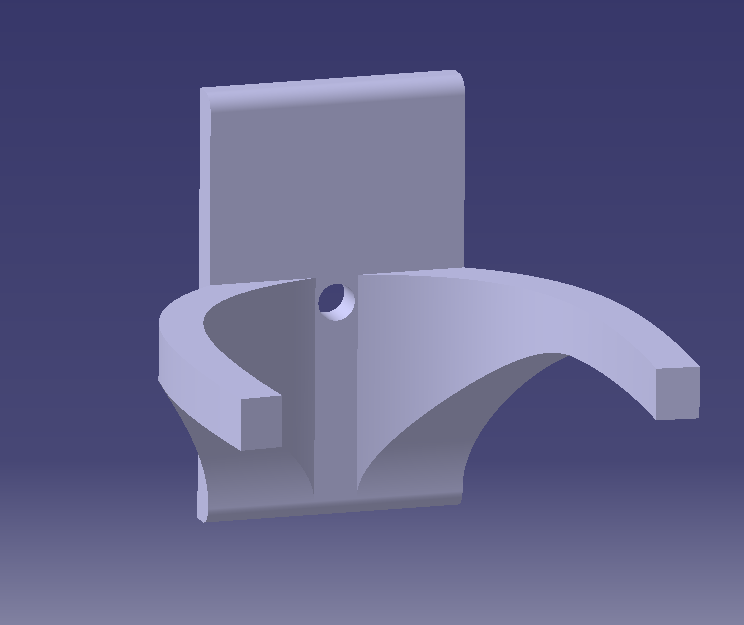
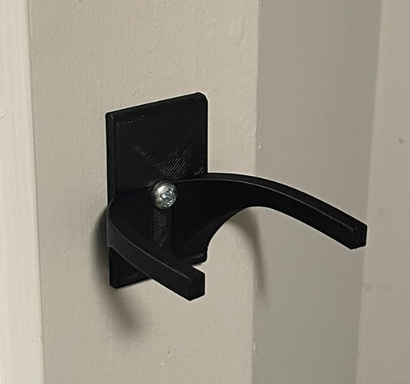
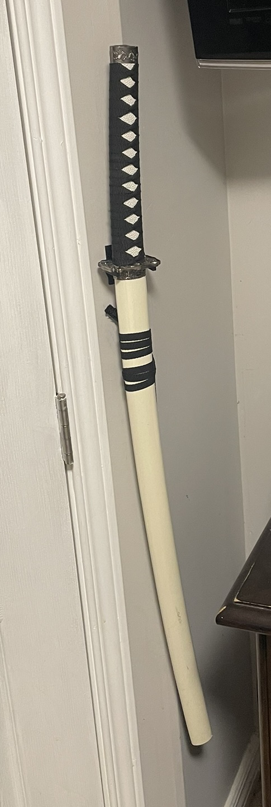
Wall-Mounted Katana Holder
3D printed support with bottom fillet and high infill for strength. Designed in CATIA V5.
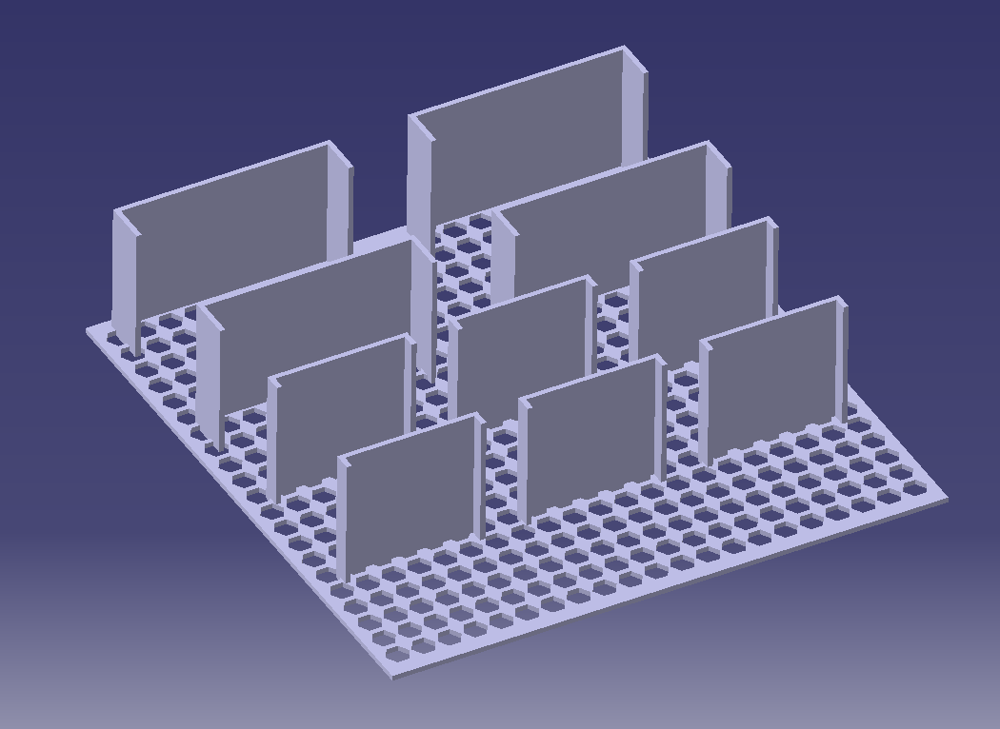
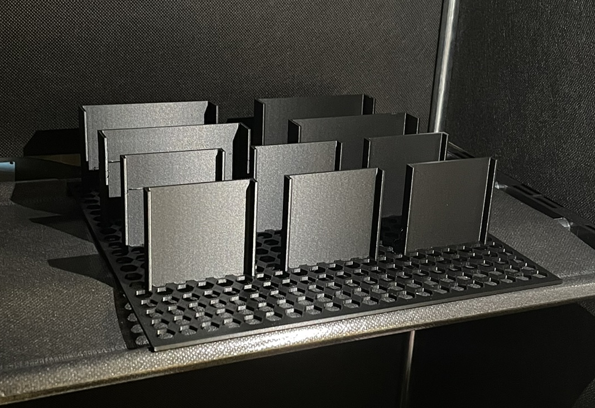
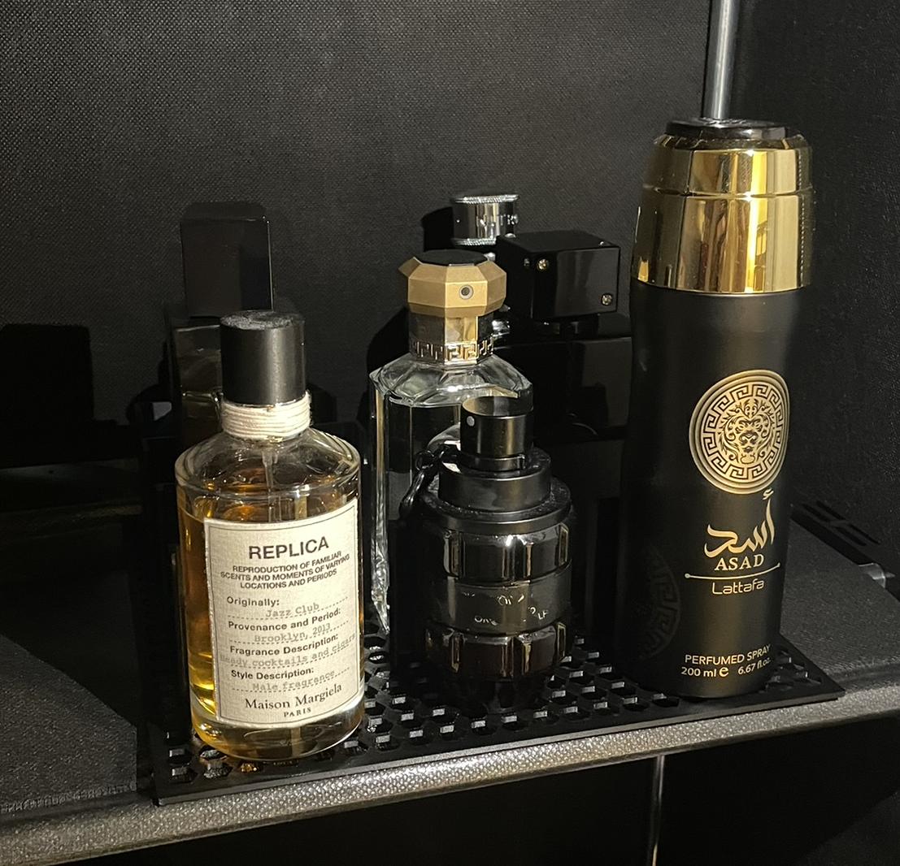
Perfume Mat & Display
Slip-proof tray with hexagon pattern to reduce material while keeping stiffness. Designed in CATIA V5.
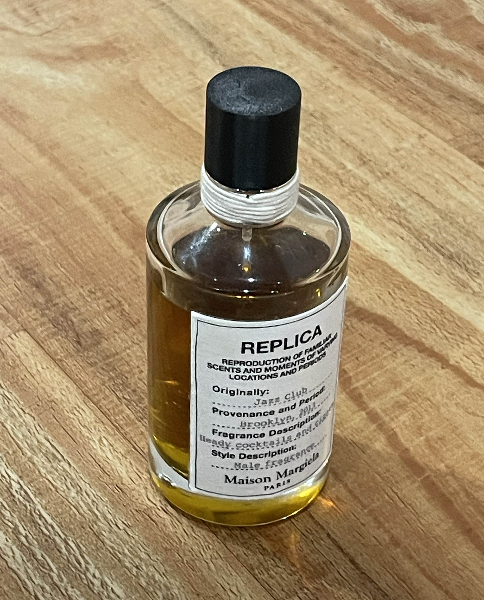
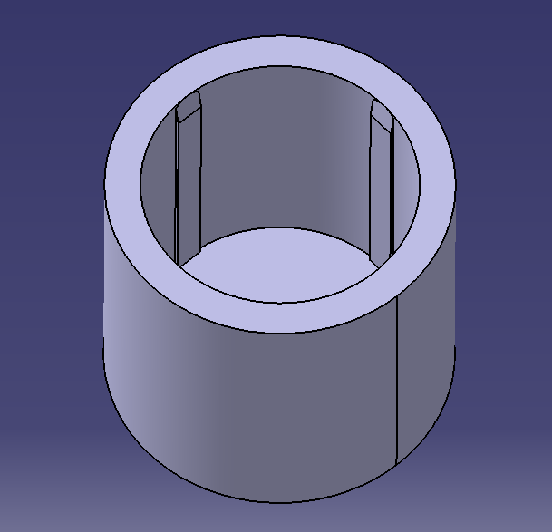
Perfume Cap
Snap-fit cap designed to pair with Replica perfume bottles. Designed in CATIA V5.
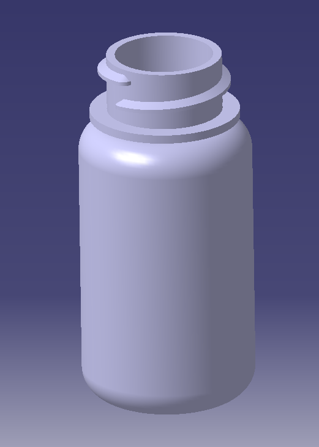
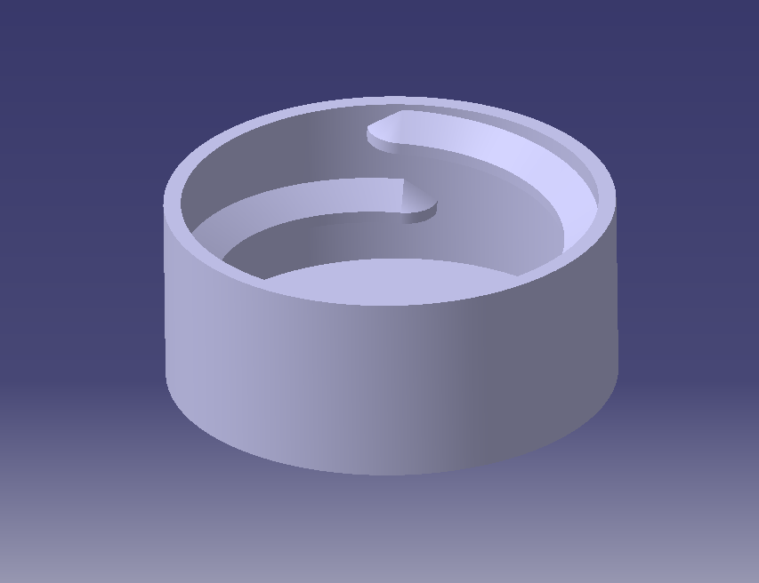
Threaded Cap and Bottle
Bottle and cap using a buttress thread profile for improved seal/leak resistance. Designed in CATIA V5.
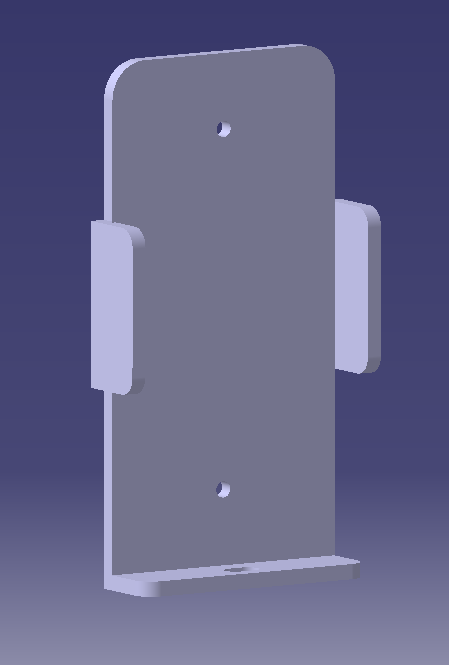

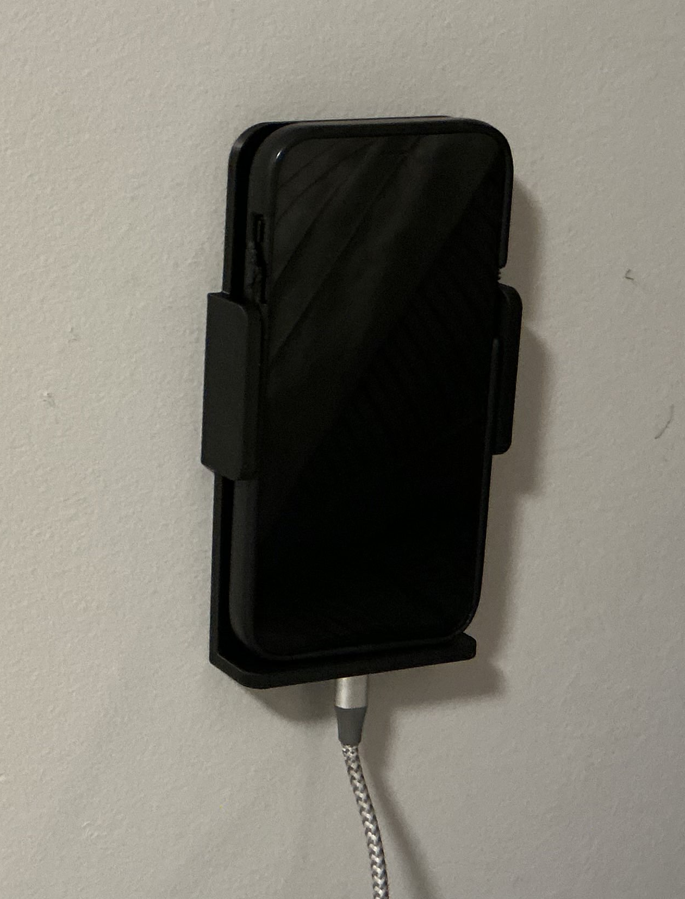
iPhone Wall Mount
Secure mount for autonomous video recording with cable clearance. Designed in CATIA V5.